Botines ADIDAS
Dentro de la marca de botines adidas existen distintos diferentes modelos. A continuacion se mostraran los distintos modelos con sus respectivas historias e imagen del primer articulo y el ultimo creado
Adidas Predator, 1994
Con motivo del Mundial de Estados Unidos, la marca alemana lanzó un nuevo modelo de botas. La principal característica era la puntera, que estaba revestida de una goma para potenciar el golpeo, nace así el “elemento Predator”. Se popularizó gracias a que unos jóvenes futbolistas, David Beckham y Zinedine Zidane, las eligieron para utilizarlas en sus partidos. Gracias a este elemento, combinado con la piel de canguro y con un ajuste óptimo, estas botas rompieron los esquemas de aquella época.
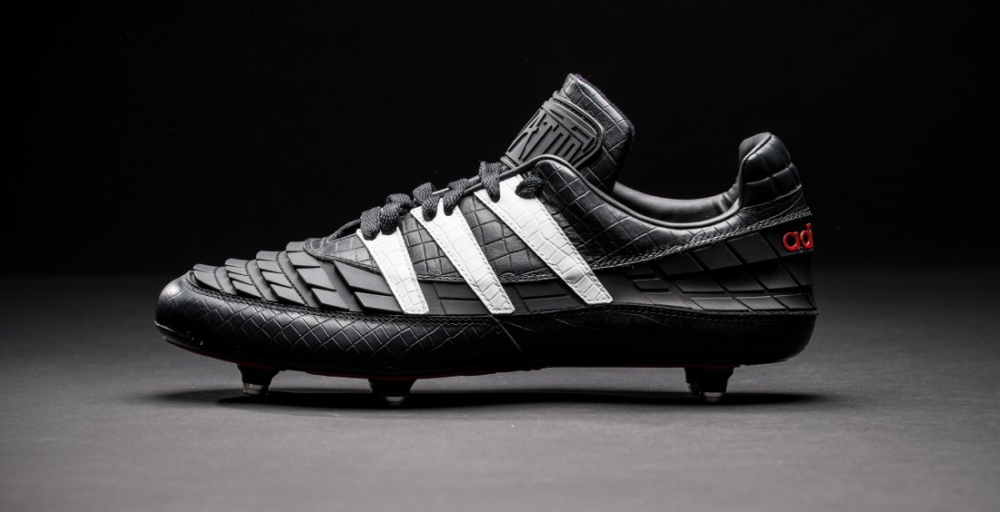
Adidas Predator 1994
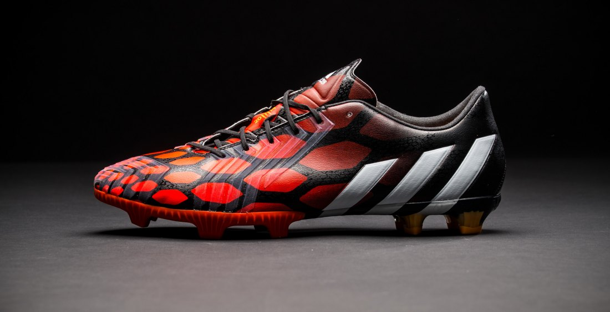
Adidas Predator (ultima) 2014
Adidas Ace, 2015
Aubrey Dolan:
En el desarrollo de adidas ACE 15 nuestra visión era clara: tratamos de crear una bota que se diferenciase de todas nuestras botas de fútbol anteriores. Esta nueva bota debería revolucionar el rendimiento de los jugadores a todos los niveles. La mejora global es importante en el juego moderno y aporta a los jugadores una ventaja competitiva sobre el oponente. Desde el primer momento la atención se centró en colocar una suela que ofrezca a los jugadores un nuevo nivel de control sobre el balón y sus movimientos. La suela ya no es sólo una forma de agarrarse al suelo, forma parte del tacto que necesitan sentir los jugadores con el balón, como ocurre con el fútbol sala o en la calle. Tener opciones de control con la suela permite a los jugadores expresarse y mostrar su historia de amor con la pelota.
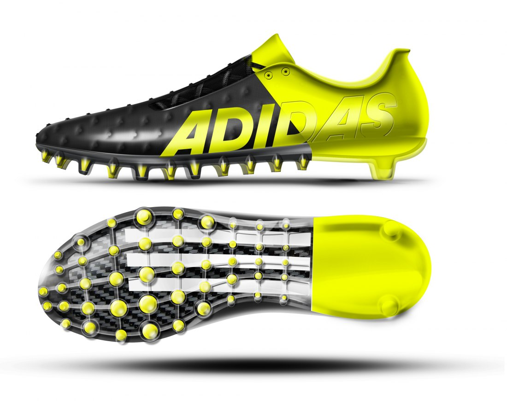
Adidas ACE 2015
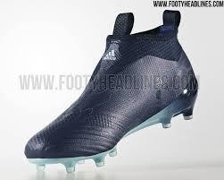
Adidas ACE 2018/19
Adidas Nemezi, 2017
Dos años después del lanzamiento de las botas de fútbol adidas Messi, la marca alemana decide deshacerse de esta línea de botas para introducir un nuevo concepto de jugador al campo, un jugador creativo, ágil y atrevido, que será él quién reciba las nuevas botas de fútbol adidas Nemeziz. Pero lo que más destaca de estas nuevas botas de fútbol adidas no es a quién va dirigido sino toda la tecnología que se ha introducido con este nuevo modelo. Unas botas que se tienen que adaptar a las características de este perfil de jugador para darle soporte en todas las acciones y adidas ha encontrado la inspiración en el boxeo, el ballet y las artes marciales. En estas tres modalidades los atletas utilizan vendajes o cintas funcionales y bajo ese punto se han desarrollado las nuevas Nemeziz.
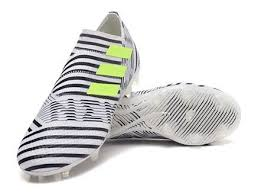
Adidas Nemeziz, 2017
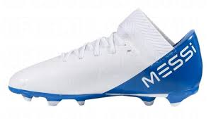
Adidas Nemeziz 2018/19
Adidas adiPURE 11 PRO, 2008
Adipure no es un silo que lleve demasiado tiempo en el mercado. Adidas tenía una colección equilibrada en 2008, fecha en la que salió al mercado la 1ª generación de adipure, sorprendentemente reciente su creación, ¿verdad? Parece que han pasado muchos más años.
1ª generación adipure (2008):
La bota caló de inmediato entre profesionales y entre el público en general. Bota económica, materiales de máxima calidad y el concepto retro perfectamente reflejado: estética y propiedades de bota de los 80-90 pero sin renunciar a los últimos beneficios tecnológicos, que estaban ahí aunque no se veían.
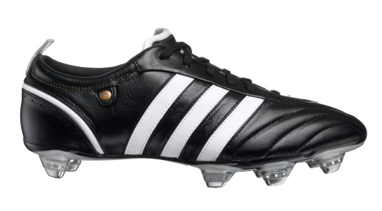
Adidas adiPURE 11 PRO 2008
2ª Generación de adipure (2009).
Comienzan los cambios rápidos, quizás más rápidos de lo que el público que sigue este tipo de bota está dispuesto a asumir. La calidad de la piel mejoraba todavía más (y eso que el listón estaba muy alto), pero un polémico sistema en el cordaje donde lo solapa interior se colocaba por debajo de la solapa exterior al tensar los cordones decepcionó a muchos usuarios (entre los que me incluyo).
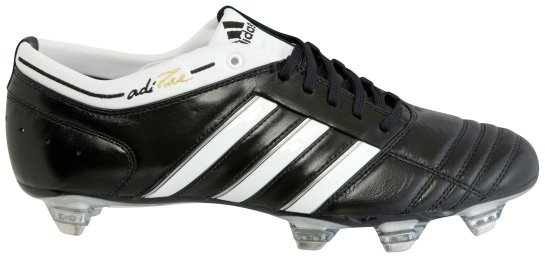
Adidas adiPURE 11 PRO 2009
3ª Generación de adipure (2010).
Año de Mundial, quizás con eso se puede justificar un nuevo reestyling de una bota que seguía funcionando en el mercado. Nike apostaba por una política má conservadora con su silo clásico y hacía períodos de vida más largos para su modelo clásico. La estética de la bota se moderniza mucho comparado con las dos primeras generaciones. Como punto positivo el cordaje vuelve al sistema tradicional, como punto negativo (negativísimo diría yo) se rediseña por completo la suela, una suela fina en el puente del pie y ancha en las dos zona de apoyo se sustituye por una suela demasiado ancha que no gusta a los fanáticos de adipure.
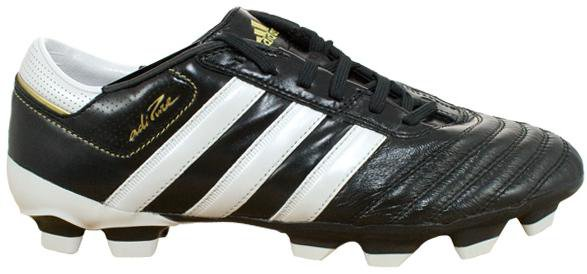
Adidas adiPURE 11 PRO 2010
4ª Generación de adipure (2011).
Interesante esfuerzo de adidas por hacer una vuelta a los orígenes de la línea adipure. De nuevo un sólo año de vida para la anterior generación, aunque en este caso el cambio era más que necesario. Es la última gran adipure que se ha visto en el mercado: estética clásiquísima, una mejora espectacular en los materiales internos de la bota con piel alcántara en todas las zonas que entran en contacto con nuestro pie y, por poner una pega, mantienen la suela de la anterior adipure. Eso sí, la suela que todos preferíamos (la de la adipure II) se mantiene en los modelos adicore (gama media).
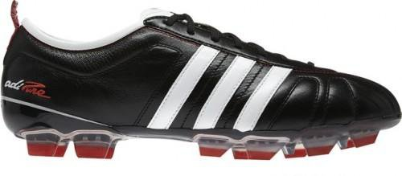
Adidas adiPURE 11 PRO 2011
5ª generación de adipure: adipure 11Pro (2012).
Y en este punto la línea perdió por completo su razón de ser. La 5ª generación es una buena bota, pero sin la esencia retro que cautivó a losmás fanáticos de la saga. Una combinación de colores inicial donde el verde tenía más protagonismo que el blanco, tecnologías en la zona que entra en contacto con el balón (un sacrilegio para los puristas), una suela con SprintFrame (fenomenal en cuanto a ligereza, pero no tanto en cuanto a confort)...

Adidas adiPURE 11 PRO 2012
6ª generación de adipure: adipure 11Pro 2 (2013).
A pesar de no haber calado entre los jugadores profesionales y el público en general, la 11pro es la generación de adipure que más ha alargado adidas: desde marzo de 2012 hasta octubre de 2013. ¿Estarían tomándose su tiempo para darle una vuelta de tuerca al silo? Viendo la nueva adipure 11pro 2, yo creo que sí.

Adidas adiPURE 11 PRO 2013
Adidas F50 Adizero, 2015
Tenemos que remontarnos hasta 2004, un año en el que en adidas únicamente existían dos silos en adidas: Copa Mundial y Predator. En aquella época adidas fue consciente de que era necesaria una nueva línea, mucho más ligera y adaptada a los jugadores ofensivos. Con esta premisa nació F50 (adizero llegaría más adelante).
1° generación de F50 (2004).
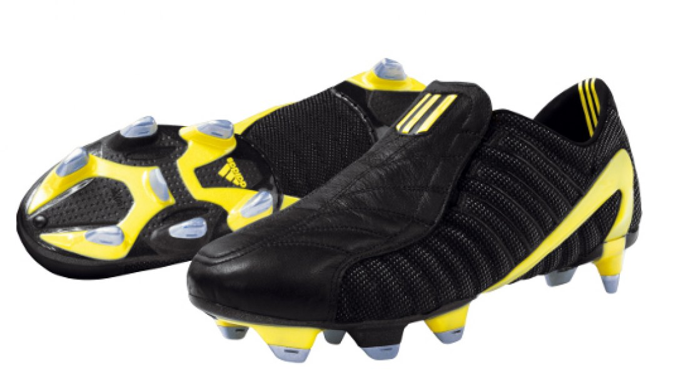
Adidas F50, 2004
3° generación de F50 (2006)
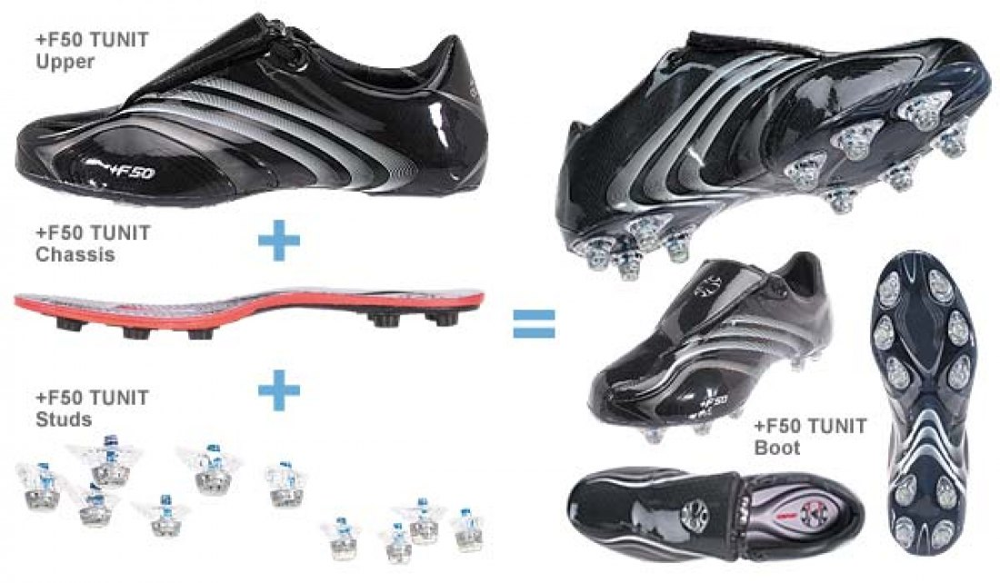
Adidas F50, 2006
5° generación de F50 (2008).
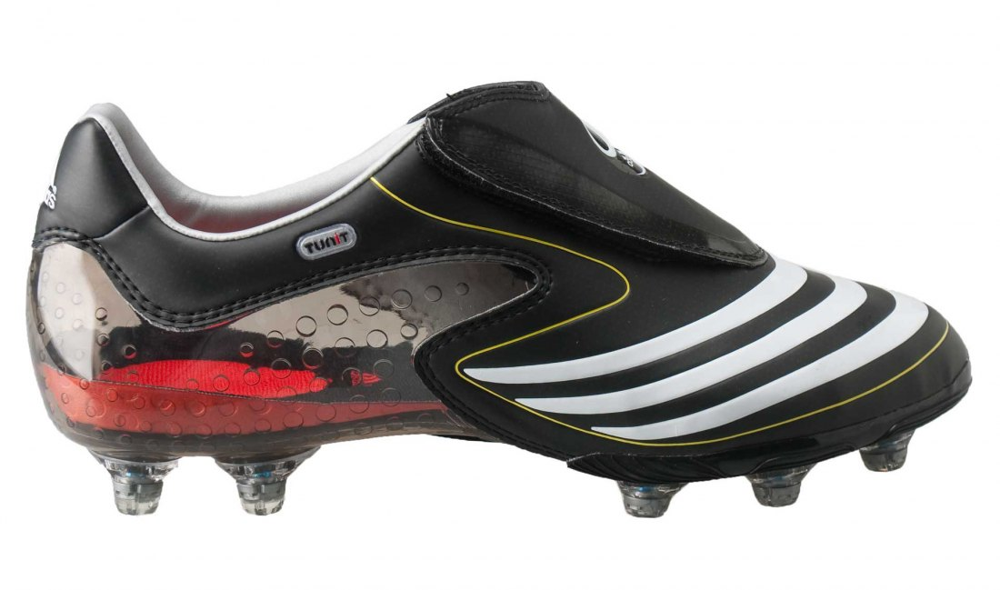
Adidas F50, 2008
7° generación de F50 (2009).
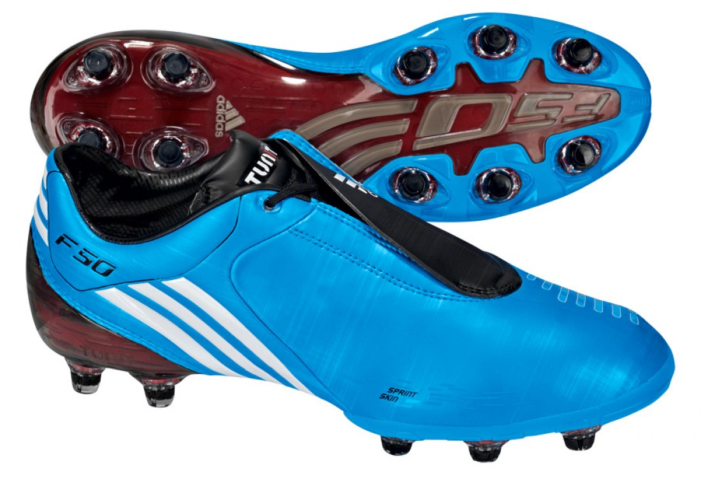
Adidas F50, 2009
8° generación de F50 adizero(2010).
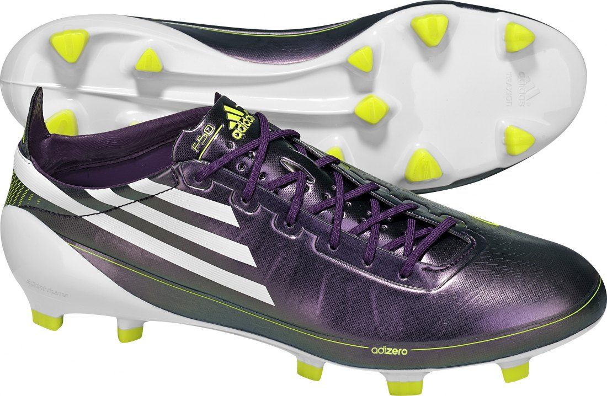
Adidas adizero F50, 2010
12° generación de F50 adizero (2014).
Adidas adizero F50, 2014